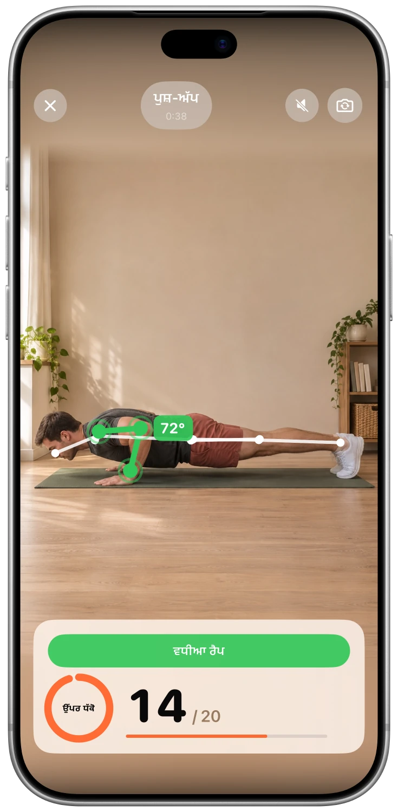
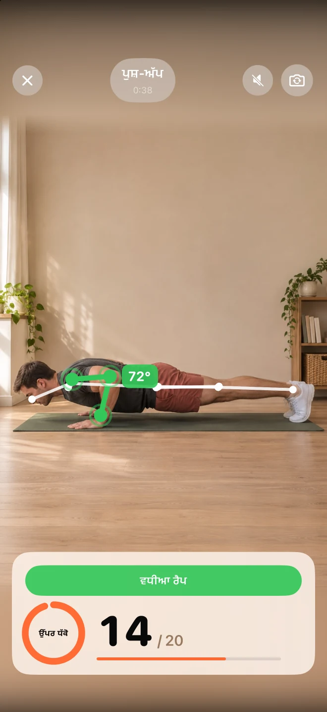
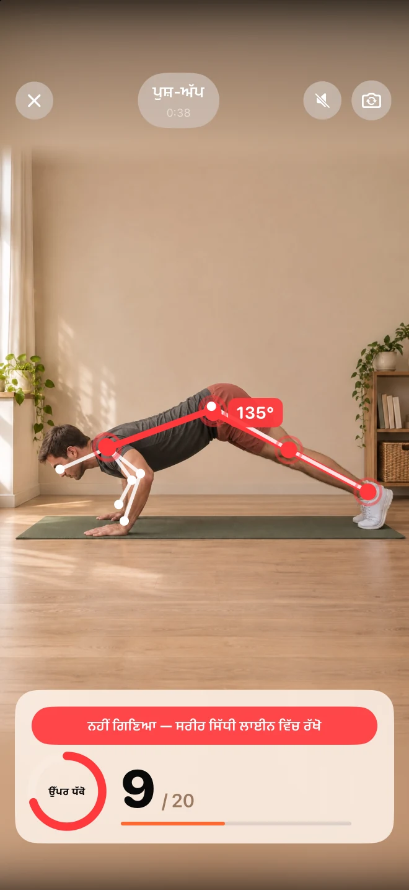
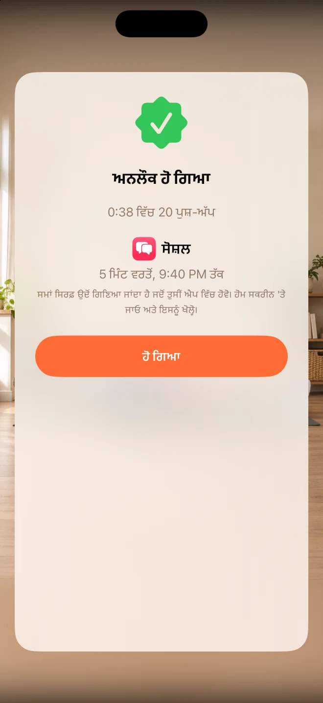

ਆਪਣੀਆਂ ਧਿਆਨ ਭਟਕਾਉਣ ਵਾਲੀਆਂ ਚੀਜ਼ਾਂ ਚੁਣੋ।
ਉਹ ਐਪਸ ਚੁਣੋ ਜਿਨ੍ਹਾਂ ਤੋਂ ਤੁਸੀਂ ਥੋੜ੍ਹੀ ਦੂਰੀ ਬਣਾਉਣਾ ਚਾਹੁੰਦੇ ਹੋ। ਅਨਲੌਕੀ ਉਹਨਾਂ ਨੂੰ ਲਾਕ ਰੱਖਣ ਲਈ ਐਪਲ ਦੇ ਸਕ੍ਰੀਨ ਟਾਈਮ ਦੀ ਵਰਤੋਂ ਕਰਦਾ ਹੈ।
ਫੀਡ ਤੋਂ ਪਹਿਲਾਂ ਥੋੜ੍ਹੀ ਜਿਹੀ ਹਰਕਤ ਕਰੋ।
ਘੱਟ ਆਟੋਪਾਇਲਟ। ਹੋਰ ਤੁਸੀਂ।
ਉਹ ਐਪਾਂ ਲਾਕ ਕਰੋ ਜੋ ਤੁਹਾਡਾ ਦਿਨ ਖਾ ਜਾਂਦੀਆਂ ਹਨ। ਪੁਸ਼-ਅੱਪ, ਸਕੁਐਟ ਜਾਂ ਜੰਪਿੰਗ ਜੈਕ ਦਾ ਛੋਟਾ ਸੈੱਟ ਕਰਕੇ ਵਰਤੋਂ ਦੇ ਕੁਝ ਮਿੰਟ ਕਮਾਓ।
ਮੁਫ਼ਤ · ਕੋਈ ਗਾਹਕੀ ਨਹੀਂ · ਕੋਈ ਖਾਤਾ ਨਹੀਂ।


ਐਪ ਸਕ੍ਰੀਨਸ਼ੌਟ
ਸਹੂਲਤਾਂ
ਉਹ ਐਪਸ ਚੁਣੋ ਜਿਨ੍ਹਾਂ ਤੋਂ ਤੁਸੀਂ ਥੋੜ੍ਹੀ ਦੂਰੀ ਬਣਾਉਣਾ ਚਾਹੁੰਦੇ ਹੋ। ਅਨਲੌਕੀ ਉਹਨਾਂ ਨੂੰ ਲਾਕ ਰੱਖਣ ਲਈ ਐਪਲ ਦੇ ਸਕ੍ਰੀਨ ਟਾਈਮ ਦੀ ਵਰਤੋਂ ਕਰਦਾ ਹੈ।
ਪੁਸ਼-ਅੱਪ, ਸਕਵਾਟ ਜਾਂ ਜੰਪਿੰਗ ਜੈਕ ਚੁਣੋ। ਜਦੋਂ ਤੁਸੀਂ ਹਰਕਤ ਕਰਦੇ ਹੋ, ਤਾਂ ਤੁਹਾਡਾ ਆਈਫੋਨ ਕੈਮਰਾ ਰੈਪਸ ਦੀ ਗਿਣਤੀ ਕਰਦਾ ਹੈ, ਅਤੇ ਤੁਹਾਨੂੰ ਤੁਰੰਤ ਫੀਡਬੈਕ ਮਿਲਦਾ ਹੈ।
ਆਪਣੇ ਇਨਾਮ ਅਤੇ ਰੋਜ਼ਾਨਾ ਦੀ ਸੀਮਾ ਨਿਰਧਾਰਤ ਕਰੋ। ਜਦੋਂ ਤੁਸੀਂ ਐਪ ਦੀ ਵਰਤੋਂ ਕਰਦੇ ਹੋ, ਤਾਂ ਕਮਾਏ ਗਏ ਮਿੰਟਾਂ ਦੀ ਗਿਣਤੀ ਕੀਤੀ ਜਾਂਦੀ ਹੈ, ਅਤੇ ਫਿਰ ਲਾਕ ਵਾਪਸ ਆ ਜਾਂਦਾ ਹੈ।
ਐਪ ਵੇਖੋ
ਅਸਲ ਸਕ੍ਰੀਨ। ਅੰਦਰ ਕੀ ਹੈ, ਇਸ ਬਾਰੇ ਬਿਹਤਰ ਅਨੁਭਵ।



FAQ
ਸ਼ੁਰੂ ਕਰਨ ਤੋਂ ਪਹਿਲਾਂ ਜਵਾਬ
ਅਨਲੌਕੀ ਐਪਲ ਦੇ ਸਕ੍ਰੀਨ ਟਾਈਮ ਦੀ ਵਰਤੋਂ ਕਰਦਾ ਹੈ। ਤੁਸੀਂ ਐਪਸ ਚੁਣਦੇ ਹੋ ਅਤੇ ਸੈਟਅੱਪ ਦੌਰਾਨ ਪਹੁੰਚ ਦੇਣ ਦੀ ਇਜਾਜ਼ਤ ਦਿੰਦੇ ਹੋ। ਤੁਸੀਂ ਆਈਫੋਨ ਸੈਟਿੰਗਾਂ ਵਿੱਚ ਪਹੁੰਚ ਨੂੰ ਰੱਦ ਕਰ ਸਕਦੇ ਹੋ।
Unlocky ਤੁਹਾਡੀ ਰਿਕਾਰਡਿੰਗ ਨਹੀਂ ਕਰਦਾ। ਕੈਮਰੇ ਦੇ ਫਰੇਮਾਂ ਦਾ ਵਿਸ਼ਲੇਸ਼ਣ ਸਿੱਧੇ ਤੁਹਾਡੇ iPhone ਉੱਤੇ ਉਸੇ ਸਮੇਂ ਕੀਤਾ ਜਾਂਦਾ ਹੈ। ਵੀਡੀਓ ਅਤੇ ਫੋਟੋਆਂ ਸੰਭਾਲੀਆਂ ਜਾਂ ਅੱਪਲੋਡ ਨਹੀਂ ਕੀਤੀਆਂ ਜਾਂਦੀਆਂ।
ਹਾਂ। ਪੁਸ਼-ਅੱਪ, ਸਕਵਾਟ ਜਾਂ ਜੰਪਿੰਗ ਜੈਕਸ ਚੁਣੋ ਅਤੇ ਇਹ ਸੈੱਟ ਕਰੋ ਕਿ ਇੱਕ ਸੈੱਟ ਕਰਨ 'ਤੇ ਕਿੰਨੇ ਮਿੰਟ ਮਿਲਣਗੇ। ਇੱਕ ਰੋਜ਼ਾਨਾ ਦੀ ਸੀਮਾ ਤੁਹਾਨੂੰ ਇੱਕ ਹੱਦ ਬਣਾਈ ਰੱਖਣ ਵਿੱਚ ਮਦਦ ਕਰਦੀ ਹੈ।
ਹਾਂ। ਅਨਲੌਕੀ ਵਿੱਚ ਕੋਈ ਗਾਹਕੀ ਜਾਂ ਪੇਵਾਲ ਨਹੀਂ ਹੈ। ਇਸਦੇ ਲਈ iOS 17 ਜਾਂ ਇਸ ਤੋਂ ਨਵੇਂ ਸੰਸਕਰਣ ਵਾਲਾ ਇੱਕ ਆਈਫੋਨ ਚਾਹੀਦਾ ਹੈ।
ਮੁਫ਼ਤ · ਕੋਈ ਗਾਹਕੀ ਨਹੀਂ · ਕੋਈ ਖਾਤਾ ਨਹੀਂ।
ਆਪਣੀ ਰਫ਼ਤਾਰ ਨਾਲ ਅੱਗੇ ਵਧੋ ਅਤੇ ਜੇ ਕੁਝ ਵੀ ਦੁਖਦਾਈ ਹੋਵੇ ਤਾਂ ਰੁਕ ਜਾਓ। ਜੇਕਰ ਤੁਹਾਨੂੰ ਕੋਈ ਸਿਹਤ ਸੰਬੰਧੀ ਸਮੱਸਿਆ ਹੈ, ਤਾਂ ਕੋਈ ਵੀ ਨਵੀਂ ਕਸਰਤ ਸ਼ੁਰੂ ਕਰਨ ਤੋਂ ਪਹਿਲਾਂ ਡਾਕਟਰ ਨਾਲ ਗੱਲ ਕਰੋ।